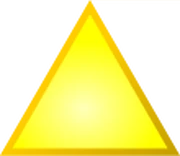

Serás redirigido en:
10
00
Minutos
--
Segundos
Cada una de estas representa un diferente parte del equilibrio, estas fueron entregas a diferentes seres.
Ganondorf: Triángulo superior, creado por Din. Otorga gran fuerza e inmortalidad.
Princesa Zelda.: Triángulo inferior izquierdo, creado por Nayru. Otorga magia y perspicacia.
Link: Triángulo inferior derecho, creado por Farore. Otorga coraje ante el peligro.